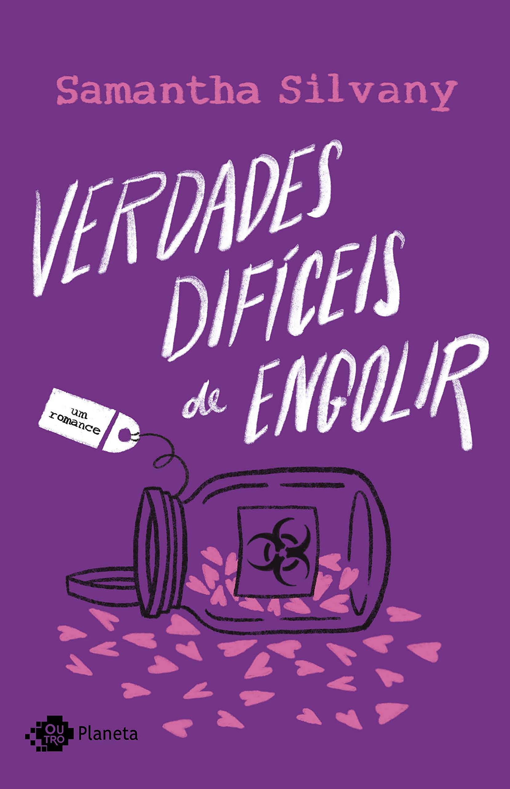
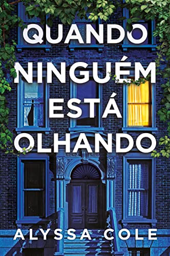
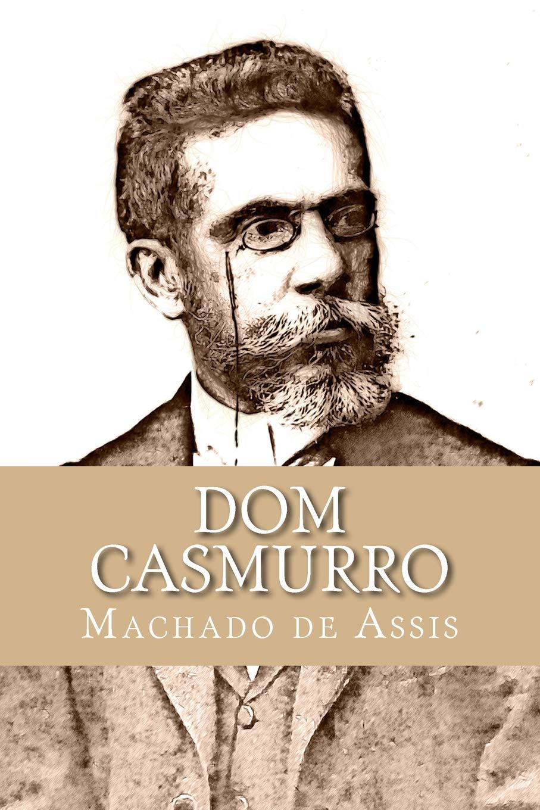
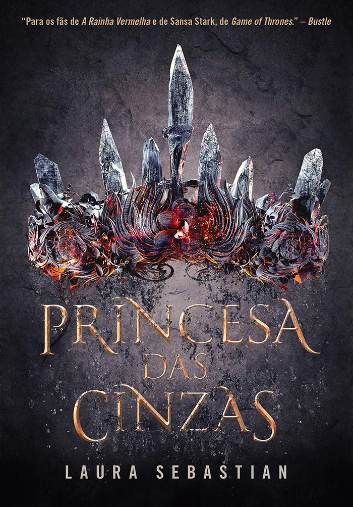

Blibioteca
Seja bem-vindo a nossa biblioteca de sugestões, aqui você fica por dentro dos livros mais lidos, clássicos, dentre outras categorias. Navegue à vontade!
Mais lidos
É assim que acaba

Gênero: romance
Autor: Colleen Hoover
Ano: 2018
Sinopse: Da autora das séries Slammed e Hopeless. Um romance sobre as escolhas corretas nas situações mais difíceis. As coisas não foram sempre fáceis para Lily, mas isso nunca a impediu de conquistar a vida tão sonhada. Ela percorreu um longo caminho desde a infância, em uma cidadezinha no Maine: se formou em marketing, mudou para Boston e abriu a própria loja. Então, quando se sente atraída por um lindo neurocirurgião chamado Ryle Kincaid, tudo parece perfeito demais para ser verdade. Ryle é confiante, teimoso, talvez até um pouco arrogante e se sente atraído por Lily. Porém, sua grande aversão a relacionamentos é perturbadora. Além de estar sobrecarregada com as questões sobre seu novo relacionamento, Lily não consegue tirar Atlas Corrigan da cabeça — seu primeiro amor e a ligação com o passado que ela deixou para trás. Ele era seu protetor, alguém com quem tinha grande afinidade. Quando Atlas reaparece de repente, tudo que Lily construiu com Ryle fica em risco. Com um livro ousado e extremamente pessoal, Colleen Hoover conta uma história arrasadora, mas também inovadora, que não tem medo de discutir temas como abuso e violência doméstica. Uma narrativa inesquecível sobre um amor que custa caro demais.
Verdades difíceis de engolir
Gênero: romance
Autor: Samantha Silvany
Ano: 2020
Sinopse: “Amor é morar em um peito que nos cabe por inteiro. Se a gente precisa forçar a entrada ou se espremer para servir, é hora de nos mudarmos.” O escritor Dan pensava estar vivendo um verdadeiro romance clichê com seu amor de infância, pelo menos até conhecer Sofia, uma mulher que o faz sentir coisas que nunca sentiu antes. Sofia, uma mulher empoderada e decidida, mas azarada no amor, achava ter encontrado seu par perfeito, até descobrir que seu príncipe encantado era o mesmo de outra pessoa. Já Alicia está convencida de que encontrou o grande amor e que nada e ninguém irão impedi-la de seguir ao altar e ter seu tão sonhado “felizes para sempre”. Mesmo que precise passar por cima de si mesma para isso. Mesmo que tenha que esmagar seu amor-próprio para provar para si e para os outros que aquele homem é a metade que lhe falta. Mas será que as pessoas realmente são incompletas e precisam de outra metade para encontrar a felicidade? O preço para viver um grande amor pode ser a própria dignidade? A sororidade existe mesmo ou é só uma palavra bonita que decidiram acrescentar no dicionário? Sofia tem algumas respostas para essas perguntas, mas Alicia tem outras bem diferentes...
Quando ninguém está olhando
Gênero: policial, suspense e mistério
Autor: Alyssa Cole
Ano: 2021
Sinopse: Sydney Green nasceu e foi criada no Brooklyn, em Nova York, mas cada vez que ela pisca os olhos seu amado bairro parece mudar. Condomínios se espalham como erva daninha, placas de “vende-se” surgem da noite para o dia e os vizinhos que ela conhece a vida toda estão sumindo. Para manter de pé tanto o passado quanto o presente da comunidade, Sydney decide canalizar sua frustração planejando um passeio guiado em que pretende contar a verdadeira história do local. Só que, para tornar o projeto realidade, vai precisar aturar seu novo vizinho, Theo, como assistente. A pesquisa dos dois, entretanto, logo se transforma. O que era apenas uma distração vira uma história de paranoia e medo. No fim das contas, talvez os vizinhos não tenham se mudado para outros bairros e a revitalização do lugar seja mais mortal do que eles imaginaram. Seriam apenas coincidências ou sinais de uma grande conspiração? Sydney pode confiar em Theo, ou ela também corre o risco de desaparecer? Quando ninguém está olhando nos conduz por um enredo hipnotizante e surpreendente, que aborda com perspicácia a violência racial e as assimetrias sociais, em uma sequência de eventos instigantes que aos poucos dão forma a um cenário de completo horror.
Clássicos
Meu pé de laranja lima

Gênero: autobiografia
Autor: José Mauro de Vasconcelos
Ano: 1968
Sinopse:Um clássico da literatura brasileira, com adaptações para a televisão, o cinema e o teatro, O Meu Pé de Laranja Lima é desses livros que marcam época. Lançado em 1968, trata-se de uma história fortemente autobiográfica, que demonstra a mão de um escritor experiente, ciente do efeito que pode provocar nos leitores com suas cenas e a composição de seus personagens. O protagonista Zezé tem 6 anos e mora num bairro modesto, na zona norte do Rio de Janeiro. O pai está desempregado, e a família passa por dificuldades. O menino vive aprontando, sem jamais se conformar com as limitações que o mundo lhe impõe – viaja com sua imaginação, brinca, explora, descobre, responde aos adultos, mete-se em confusões, causa pequenos desastres. As surras que lhe aplicam seu pai e sua irmã mais velha são seu suplício, a ponto de fazê-lo querer desistir da vida. No entanto, o apego ao mundo que criou felizmente sempre fala mais alto. Só não há remédio para a dor, para a perda. E Zezé muito cedo descobrirá isso. A alegria e a tristeza não poderiam estar mais bem combinadas do que nestas páginas. E isso, se não explica, justifica a imensa popularidade alcançada pelo livro.
Dom Casmurro
Gênero: romance
Autor: Machado de Assis
Ano: 1899
Sinopse:Em Dom Casmurro, o narrador Bento Santiago retoma a infância que passou na Rua de Matacavalos e conta a história do amor e das desventuras que viveu com Capitu, uma das personagens mais enigmáticas e intrigantes da literatura brasileira. Nas páginas deste romance, encontra-se a versão de um homem perturbado pelo ciúme, que revela aos poucos sua psicologia complexa e enreda o leitor em sua narrativa ambígua acerca do acontecimento ou não do adultério da mulher com olhos de ressaca, uma das maiores polêmicas da literatura brasileira.
A moreninha
Gênero: romance
Autor: Joaquim Manuel Macedo
Ano: 1844
Sinopse:A história narrada no livro “A moreninha”, começa com três amigos estudantes de medicina, Augusto, Fabrício e Leopoldo, sendo convidados para passar o feriado tradicional de Sant’Ana na ilha de Paquetá, na casa da sua avó.Porém, antes de iniciarem a viagem, os amigos fazem uma aposta com Augusto, o mais namorador do grupo: se ele ficasse apaixonado pela mesma garota por mais de quinze dias, ele teria que escrever um livro sobre o romance. Caso contrário, Filipe é quem deveria escrever o livro. Quando chegam na casa de D. Ana, o grupo de amigos conhece Carolina – a irmã de Filipe -, e suas duas primas, Joaquina e Joana. Num primeiro momento, Augusto via Carolina apenas como uma garota impertinente. Mas, com o tempo, sua vivacidade e inteligência ao responder às provocações do jovem começam a conquistá-lo. Enquanto isso, Fabrício e Joana começam a ter problemas no seu relacionamento. Por isso, ele pede a ajuda de Augusto para colocar em prática um plano que causaria o rompimento do casal. Mas, como Augusto não concorda com a armação, os dois amigos começam a brigar. Então, durante um jantar, Fabrício expõe a personalidade inconstante de Augusto em relação aos seus relacionamentos. Como resultado, todas as mulheres que estão presentes na reunião se afastam dele, com exceção de D. Carolina, mais conhecida como “a moreninha”.
Trilogias
A seleção, A elite, A escolha, A herdeira e A coroa

Gênero: romance
Autor: Kiera Cass
Ano: 2012
Sinopse:A história narrada no livro “A moreninha”, começa com três amigos estudantes de medicina, Augusto, Fabrício e Leopoldo, sendo convidados para passar o feriado tradicional de Sant’Ana na ilha de Paquetá, na casa da sua avó.Porém, antes de iniciarem a viagem, os amigos fazem uma aposta com Augusto, o mais namorador do grupo: se ele ficasse apaixonado pela mesma garota por mais de quinze dias, ele teria que escrever um livro sobre o romance. Caso contrário, Filipe é quem deveria escrever o livro. Quando chegam na casa de D. Ana, o grupo de amigos conhece Carolina – a irmã de Filipe -, e suas duas primas, Joaquina e Joana. Num primeiro momento, Augusto via Carolina apenas como uma garota impertinente. Mas, com o tempo, sua vivacidade e inteligência ao responder às provocações do jovem começam a conquistá-lo. Enquanto isso, Fabrício e Joana começam a ter problemas no seu relacionamento. Por isso, ele pede a ajuda de Augusto para colocar em prática um plano que causaria o rompimento do casal. Mas, como Augusto não concorda com a armação, os dois amigos começam a brigar. Então, durante um jantar, Fabrício expõe a personalidade inconstante de Augusto em relação aos seus relacionamentos. Como resultado, todas as mulheres que estão presentes na reunião se afastam dele, com exceção de D. Carolina, mais conhecida como “a moreninha”.
Princesa das cinzas, Dama da névoa e Rainha das chamas
Gênero: romance
Autor: Laura Sebastian
Ano: 2018
Sinopse:Princesa das cinzas - Theodosia era a herdeira do trono de Astrea quando seu reino foi invadido, deixando um rastro de destruição. Dez anos depois, a princesa, órfã, prisioneira e subjugada, percebe que não lhe resta mais nada, a não ser lutar pela própria liberdade. O passado, que por tanto tempo ficou enterrado, agora precisa vir à tona para mostrar a Theodosia os caminhos que poderão levá-la de volta ao trono. Mas Theo conseguirá ser a rainha de que seu povo precisa? Ou será que anos de humilhações transformaram a herdeira da Rainha do Fogo em meras cinzas? Dama da névoa - Quando Theodosia tinha apenas seis anos, sua mãe, a Rainha do Fogo, foi morta pelo kaiser. Ele tomou seu país e a manteve prisioneira, coroando-a como a Princesa das Cinzas e manipulando-a por dez anos. Porém, essa época terminou. O kaiser subestimou Theo, considerando-a fraca e indefesa. Ele não percebeu que uma mente arguta é a arma mais mortal. Agora, Theo não usa mais uma coroa de cinzas. Ela recuperou o título que lhe pertencia e fez um refém: o prinz Søren, filho do kaiser. Mas seu povo continua escravizado e ela está a milhares de quilômetros de distância. Para recuperar o trono, ela precisa de um exército. Segundo sua tia, a temível pirata Dragonsbane, a única maneira de obter um é se casando. Theo sabe que a liberdade tem um preço, mas ela está determinada a encontrar um jeito de salvar seu país sem precisar se perder no caminho. Rainha das chamas - A princesa Theodosia foi prisioneira em seu próprio país por mais de uma década, humilhada pelo kaiser e por sua corte. Porém, mesmo usando uma coroa de cinzas, o fogo nunca deixou seu sangue. Como herdeira legítima do trono de Astrea, Theo sabe que uma rainha não se acovarda jamais. Agora livre e com um exército rebelde sob seu comando, Theodosia tem que libertar o povo escravizado por uma inimiga ainda mais assustadora: Cress, a nova kaiserin. Munida de um tipo de magia nunca visto antes, a adversária está disposta a queimar todos que ficarem no caminho do seu império. Theo precisa abraçar seu novo poder como Rainha das Chamas se quiser derrotar Cress, a mulher a quem um dia chamou de irmã do coração.
Amor e Gelato, Amor e Sorte, Amor e Azeitonas

Gênero: romance
Autor: Jenna Evans Welch
Ano: 2017
Sinopse:Amor e Gelato - Um verão na Itália, uma antiga história de amor e um segredo de família. Depois da morte da mãe, Lina fica com a missão de realizar um último pedido: ir até a Itália para conhecer o pai. Do dia para a noite, ela se vê na famosa paisagem da Toscana, morando em uma casa localizada no mesmo terreno de um cemitério memorial de soldados americanos da Segunda Guerra Mundial, com um homem que nunca tinha ouvido falar. Apesar das belezas arquitetônicas, da história da cidade e das comidas maravilhosas, o que Lina mais quer é ir embora correndo dali. Mas as coisas começam a mudar quando ela recebe um antigo diário da mãe. Nele, a menina embarca em uma misteriosa história de amor, que pode explicar suas próprias origens. No meio desse turbilhão de emoções, Lina ainda conhece Ren e Thomas, dois meninos lindos que vão mexer ainda mais com seu coração. Uma trajetória que fará Lina descobrir o amor, a si mesma e também aprender a lidar com a perda. Amor & Gelato é uma deliciosa viagem pelos mais românticos pontos turísticos italianos, com direito a tudo de mais intenso que o lugar tem a oferecer: desde paixões até corações partidos. Amor e Sorte - Depois de Amor & gelato, chegou a vez de acompanharmos Addie, melhor amiga de Lina, em uma emocionante aventura pelas estradas irlandesas. Addie está visitando a Irlanda com a família e tentando aproveitar a paisagem verdejante para não pensar em seu coração partido. Porque, assim que voltar aos Estados Unidos, ela vai ter que enfrentar as consequências do fim terrível de seu romance de verão. Até lá, só quer relaxar enquanto os pais não descobrem o que aconteceu. Mas Ian, seu irmão mais velho, sabe de tudo e não a deixa em paz. Agora os dois, que sempre foram próximos, não param de brigar. Tudo muda quando Addie descobre que Ian também está guardando segredos. Depois de uma série de imprevistos, em vez de ir visitar Lina, sua melhor amiga, na Itália, Addie se junta ao irmão em uma inesperada viagem de carro. O motorista é Rowan, um irlandês simpático (e bonitinho) que dirige, feito um louco, uma lata-velha apelidada de Trevo. Nessas circunstâncias nada favoráveis, Addie conta apenas com um guia de viagem roubado da biblioteca do hotel, Irlanda para corações partidos, e torce para que os conselhos do livro realmente funcionem. Se a Ilha Esmeralda der tanta sorte quanto dizem, talvez ela consiga fazer as pazes com o irmão e, quem sabe, se apaixonar de novo. Em Amor & sorte, vamos ter mais um gostinho do universo de Amor & gelato, dessa vez em uma viagem pelas belezas naturais e pelos pontos turísticos da Irlanda. O aguardado segundo livro de Jenna Evans Welch é uma história encantadora sobre família, amizade e a jornada para se recuperar de uma desilusão amorosa. Amor e azeitonas - Da autora do best-seller Amor & gelato, uma viagem inesquecível pela ilha de Santorini. O que a lenda de uma cidade submersa tem a ver com a vida de uma adolescente? No caso da greco-americana Liv Varanakis, a resposta é tudo. Quando era pequena, Liv e seu pai passavam horas tentando descobrir a localização de Atlântida, mas, desde que ele foi embora sem explicação, ela evita pensar na cidade perdida a todo custo. Com dezessete anos, Liv tem uma nova vida, um novo namorado e está muito bem, obrigada. Até que um cartão-postal amassado chega de Santorini e faz seus planos irem por água abaixo. Nele, seu pai explica que está gravando um documentário a respeito de Atlântida e que mandou uma passagem de avião para Liv ir até a Grécia ajudá-lo. Agora, ela terá que deixar para trás tudo que construiu e embarcar rumo ao desconhecido. O reencontro dos dois traz à tona milhares de perguntas e emoções, e, para piorar, Theo, o assistente charmoso de seu pai, insiste em filmar esses momentos constrangedores. Pelo menos Liv pode aproveitar a ilha paradisíaca, com seu pôr do sol magnífico, a água turquesa, as casinhas brancas e a culinária deliciosa. Porém, com o passar dos dias, a garota começa a desconfiar de que não foi Atlântida que a trouxe até ali, e sim algo muito mais importante.
Volte para o menu